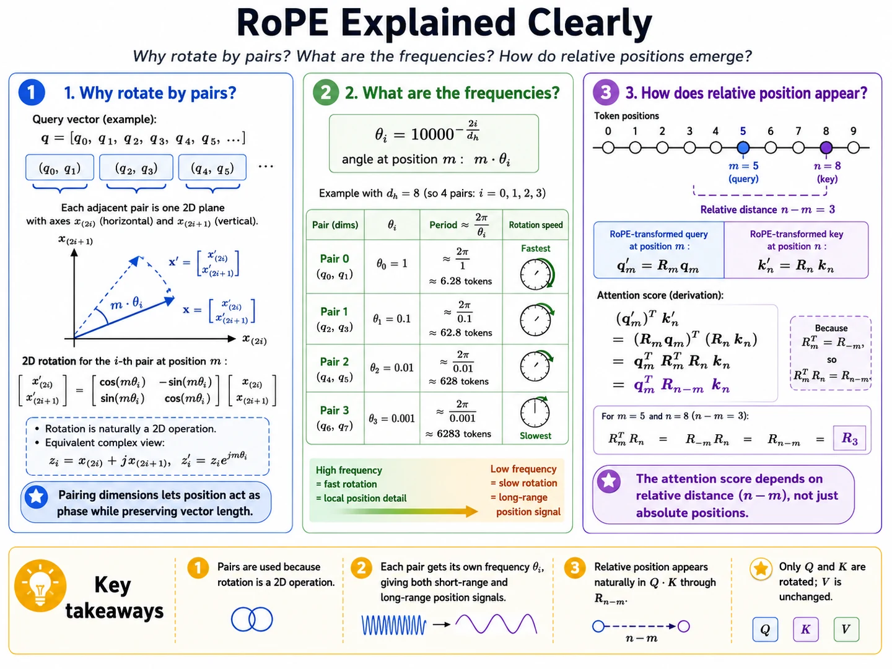

Lesson 8 of 9 · RoPE assembly
Each pair carries a different clock.
Your win: explain why adjacent dimensions are paired and why the pairs rotate at geometrically spaced rates.
Position becomes phase
For dimension pair \(i\), choose an angular frequency \(\theta_i\). At token position \(m\), rotate by:
Moving forward one token adds \(\theta_i\) radians. Moving forward \(r\) tokens adds \(r\theta_i\) radians.
The original frequency schedule
Here \(d_h\) is the query/key width of one attention head. The frequencies decrease geometrically: early pairs turn quickly; later pairs turn slowly.
Example: \(d_h=8\)
| Pair | Dimensions | \(\theta_i\) | Period \(2\pi/\theta_i\) |
|---|---|---|---|
| 0 | \((q_0,q_1)\) | \(1\) | \(\approx6.28\) tokens |
| 1 | \((q_2,q_3)\) | \(0.1\) | \(\approx62.8\) tokens |
| 2 | \((q_4,q_5)\) | \(0.01\) | \(\approx628\) tokens |
| 3 | \((q_6,q_7)\) | \(0.001\) | \(\approx6283\) tokens |
Fast pairs are sensitive to small shifts. Slow pairs preserve distinct phase over longer ranges. Together, the stack offers multiple positional scales.

Retrieval check
Which frequency gives the longer period?
Practice before moving on
- For \(d_h=8\), list all four adjacent dimension pairs.
- Calculate the angle for \(m=7\) and \(\theta_i=0.1\).
- Calculate the relative angle for positions \(m=5\), \(n=8\), and \(\theta_i=0.1\).
- Estimate the period for \(\theta_i=0.01\).
- Explain why using only \(\theta=1\) would make long-range positions ambiguous.
Check solutions
- \((q_0,q_1),(q_2,q_3),(q_4,q_5),(q_6,q_7)\).
- \(0.7\) radians.
- \((8-5)(0.1)=0.3\) radians.
- \(2\pi/0.01\approx628\) tokens.
- The phase repeats every \(2\pi\), so one fast clock wraps after only about 6.28 tokens; slower clocks retain other scales.
Primary source: Su et al., RoFormer, Section 3.2.2. Compare Equations 14–16 with the pair table above.
Ask the teaching agent to calculate the schedule for a different head dimension if the exponent still feels opaque.